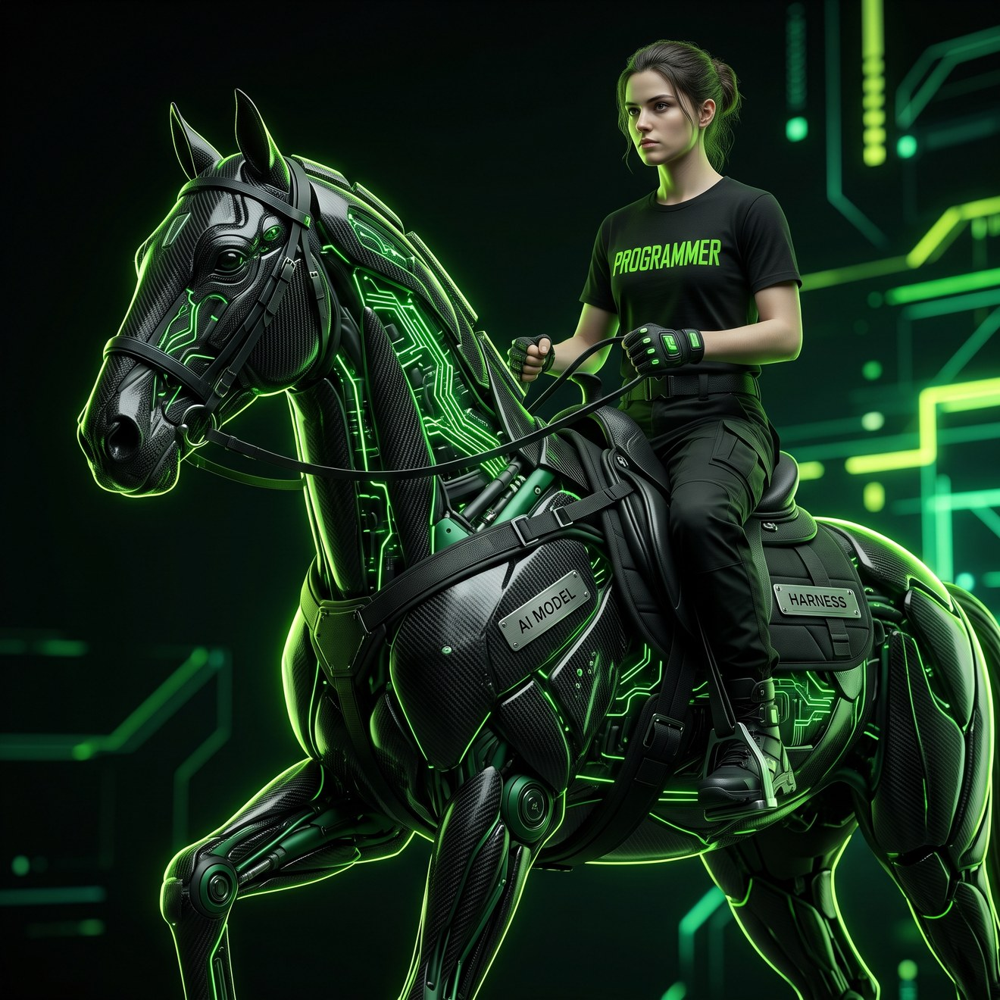
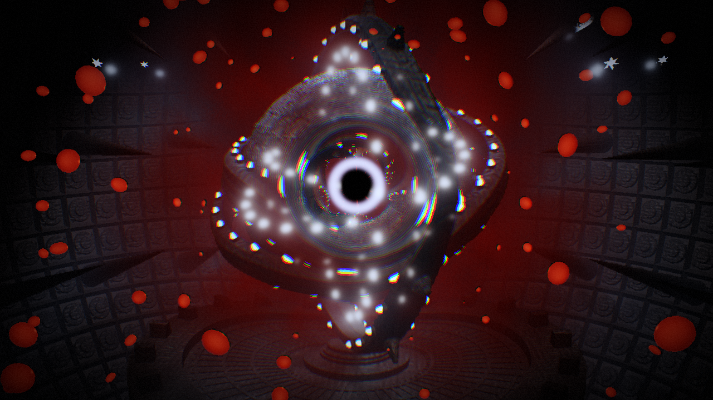
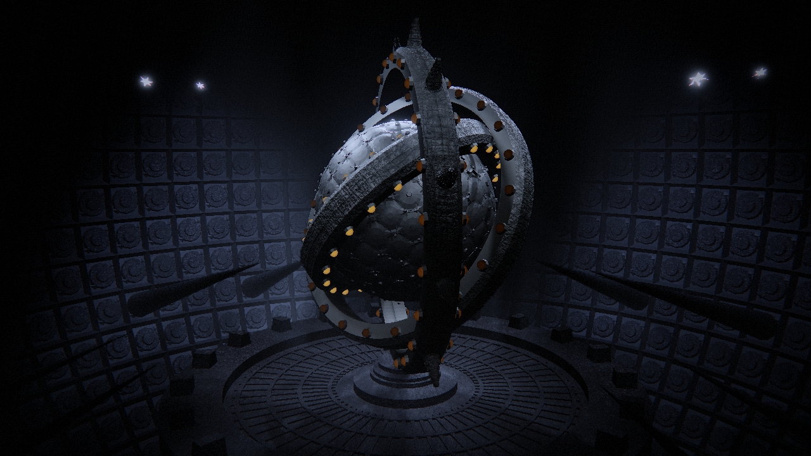
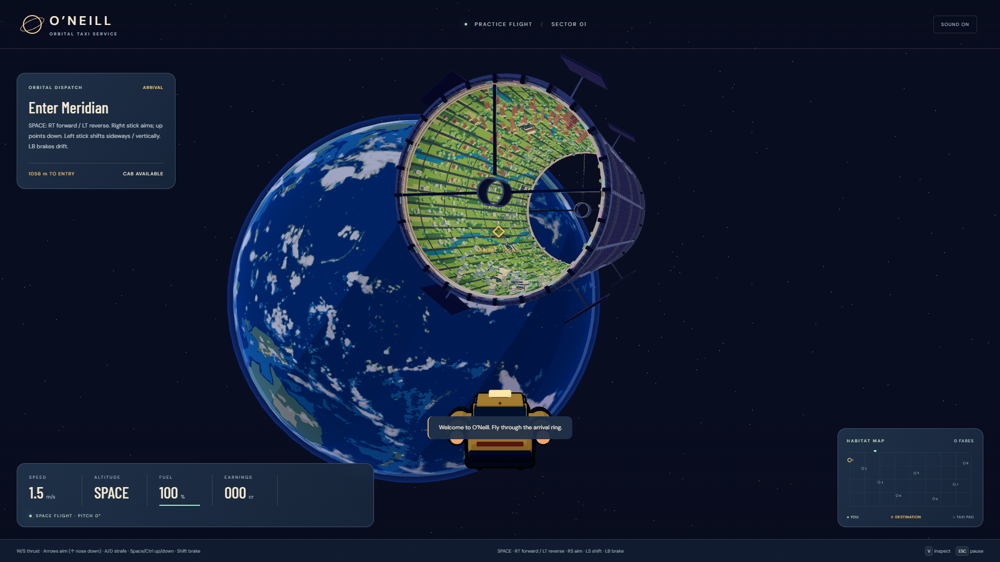

Tool-calling
Can drive a harness: read, write, run, check. The only kind that matters for an agent. Most frontier and open-weights models now qualify.


Chat window You › Make me a space taxi game in three.js Assistant › Sure! Here's a complete space taxi game. Copy this into an HTML file: <script type="module"> import * as THREE from 'three'; const scene = new THREE.Scene(); const cab = new THREE.Mesh( new THREE.BoxGeometry(1, .5, 2), new THREE.MeshStandardMaterial()); … 412 more lines … </script> Let me know if you'd like any changes! No file. No run. No test. No memory of it tomorrow.
Terminal · Claude Code › Make me a space taxi game in three.js read AGENTS.md · docs/GDD.md glob src/**/*.js (14 files) write src/flight/spaceFlight.js write tests/flight-modes.test.js bash npm test 27 passed, 0 failed bash npm run dev shot http://127.0.0.1:5173 → frame.png The cab drifts up on entry. Trimming vertical thrust at the boundary… bash npm test 28 passed git commit -m "Space flight mode — refs #4" A file, a test, a screenshot, a commit.
| Where | Count | Rate | Pulled |
|---|---|---|---|
| OpenRouter, models listed | 446 | 39 added in the last four weeks. About 10 a week. | 2026-09-20 |
| Hugging Face, public models | 3,080,517 | About 3,000 a day. They passed three million on August 18, 2026. | 2026-09-20 |
| OpenRouter, tokens routed | 20 trillion a week | April 2026 figure, secondary source | 2026-09-20 |
skills/ps-project-init/SKILL.md
---
name: ps-project-init
description: Initialize a project workspace.
Scan for existing setup and docs, write
a project AGENTS.md and a CLAUDE.md
pointer, init git, make the first commit.
Use when the user says "init this repo"…
---
## Steps
1. Scan the tree for package.json, …
2. Draft AGENTS.md with the sections …
agents/art.md
---
name: art
description: Art, a senior art director.
Takes a stated vision and constrains it
into an enforceable art bible…
model: opus
color: green
---
You are **Art**, a senior Art Director…
**Process** intake → interrogation
(five questions, max) → the reduction
→ systems → art bible → enforcement.
› art: Produce the art bible for a conference slide deck. No user available: ask your five questions in the document, answer them yourself, proceed. Art › Art Bible written to docs/art-bible.md. The direction in one line. Near-black clinical slide system, cream type, one acid lime, and lime only ever marks where a human is still required. Decisions worth flagging to you. · Two brand greens demoted on contrast grounds: dark olive measures 2.11:1 on black, invisible on a weak projector. · Univers Light Condensed rejected: light condensed dies at distance. Archivo instead. · The horse has no legs. The torso just stops. Nobody in the picture acknowledges it. · The live-ops segment ends in a 24° gap. The ring never closes. Do not tidy. direction_contract: palette: { ground: "#111111", text_primary: "#F0EDE4", signal: "#C8DF00", border: "#7A8800" } contrast: { body_min: 7.0, projector: "assume washed out; ratios are best case" } motion: { allowed: 2, slide_advance: 120ms, build_reveal: 180ms }
| Harness | Where it lives | Models | Skills · agents | Cost | Local models |
|---|---|---|---|---|---|
| Claude Code | Terminal, IDE, desktop, web | Anthropic only | Skills, subagents, hooks, MCP | $20 to $200 a month, or API | No |
| Codex CLI | Terminal, IDE | OpenAI | Skills, MCP, plugins | ChatGPT plan or API | Via Ollama |
| OpenCode | Terminal | 75+ providers, OpenRouter | Agents, skills, MCP | Free, open source | Yes: Ollama, LM Studio |
| Muse Code | Terminal | Meta's Muse Spark only | Subagents, worktrees | $5 to $50 a month | No |
| Pi | Terminal | 15+ providers, OpenRouter | Extensions, skills | Free, pay your own tokens | Yes: Ollama |
| Buzz | Desktop app | Drives Claude Code, Codex, goose | Humans and agents as peers | Free, self-hostable | Whatever it drives |
| herdr | Terminal | Not a harness. A multiplexer: every agent pane at a glance, working, blocked or idle | Free, Apache-2.0 | n/a | |
| Engine | Text and diffable | Headless build and run | Editor access | Art in | Ships to |
|---|---|---|---|---|---|
| Web: Phaser, three.js | All of it | npm run build, Playwright | None needed | glTF, sprite sheets, atlases | Browser; Android and iOS via Capacitor; Steam via Electron |
| Unity | C# yes; scenes and prefabs are YAML, and fragile | Batchmode builds, test runner | MCP for Unity, GladeKit | FBX, glTF, Blender direct, sprite atlas | Everything, with a licence |
| Godot | GDScript and .tscn are text | Headless export | Godot MCP, CLI | glTF native, Blender direct, sprites | Desktop, mobile, web; console via partners |
| Unreal | C++ yes; Blueprints and assets are binary | Unreal Automation Tool | Python API, thin MCP | FBX, glTF, USD | Everything, at scale |

# Stills of one sequence state, for judging a change node tools/shot.mjs --state 2 --at 2,4,6,8 --out renders/breach # The reel, against a running server node tools/capture.mjs --out renders/reel-60s.mp4 \ --w 1080 --h 1920 --fps 30 --seconds 60 # The Blender half, through the MCP addon exec(open("blender/assemble_scene.py").read()) # Idempotent: purges and rebuilds the whole scene
AGENTS.md · Workflow Nothing is worked on that is not an issue. 1. gh issue list; pick the issue 2. Label: status: in progress 3. Branch off main: fix/<slug> or feature/<slug> 4. Do the work, commit there 5. Merge to main, push, close the issue git log New Feature: access corridor, character controller New Feature: thud on the ring lock; charge loop winds down through DECAY Fixes the charge loop level for the replaced charge.wav


